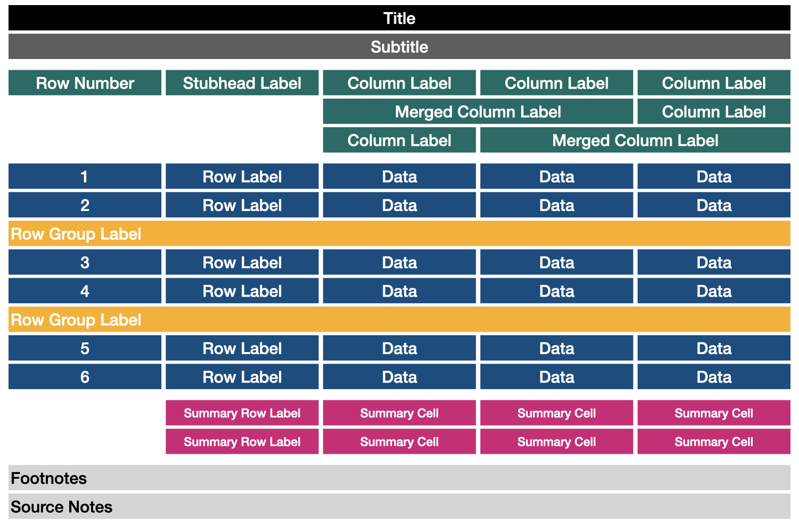

PrettyTables.jl
This package has the purpose to print data in matrices using different backends. It was orizinally inspired in the functionality provided by ASCII Tables.
PrettyTables.jl allows to print the data together with some table sections. They can be modified by the user to obtain the desired output. The sections currently available are:

This design is heavily inspired by the R's package gt but the API is highly different due to the differences between the R and Julia languages.
julia> using PrettyTablesjulia> t = 0:1:200:1:20julia> data = hcat(t, ones(length(t) ), t, 0.5.*t.^2);julia> column_labels = [ ["Time", "Acceleration", "Velocity", "Distance"], [ "[s]", "[m / s²]", "[m / s]", "[m]"] ]2-element Vector{Vector{String}}: ["Time", "Acceleration", "Velocity", "Distance"] ["[s]", "[m / s²]", "[m / s]", "[m]"]julia> hl_p = TextHighlighter( (data, i, j) -> (j == 4) && (data[i, j] > 9), crayon"blue bold" );julia> hl_v = TextHighlighter( (data, i, j) -> (j == 3) && (data[i, j] > 9), crayon"red bold" );julia> hl_10 = TextHighlighter( (data, i, j) -> (i == 10), crayon"fg:white bold bg:dark_gray" );julia> style = TextTableStyle(first_line_column_label = crayon"yellow bold");julia> table_format = TextTableFormat(borders = text_table_borders__unicode_rounded);
julia> pretty_table(
data;
column_labels = column_labels,
style = style,
highlighters = [hl_10, hl_p, hl_v],
table_format = table_format_format = TextTableFormat(borders = text_table_borders__unicode_rounded)
)
Installation
julia> using Pkg
julia> Pkg.add("PrettyTables")